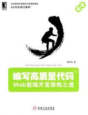

<ion-view view-title="个人收藏">
    <ion-content style="background: #F5F0B6;">
	   <div id="book">
	   	   <h2>我的收藏
	   	        <em style="margin-left:270px;">
	   	            <a href="#" target="_blank">&gt;&gt;更多</a>
	   	        </em>
	   	   </h2>
	   	   <ul>
	   	   	   <li>
	   	   	   	    <a href="http://pan.baidu.com/share/link?shareid=1154357811&amp;uk=3223696956" target="_blank"></a>
	   	   	   </li> 
	   	   	   <li>
	   	   	   	    <a href="http://pan.baidu.com/share/link?shareid=1154357811&amp;uk=3223696956" target="_blank"></a>
	   	   	   </li> 
	   	   	   <li>
	   	   	   	    <a href="http://pan.baidu.com/share/link?shareid=1154357811&amp;uk=3223696956" target="_blank"></a>
	   	   	   </li>
	   	   	   <li>
	   	   	   	    <a href="http://pan.baidu.com/share/link?shareid=1154357811&amp;uk=3223696956" target="_blank"></a>
	   	   	   </li> 
	   	   	   <li>
	   	   	   	    <a href="http://pan.baidu.com/share/link?shareid=1154357811&amp;uk=3223696956" target="_blank"></a>
	   	   	   </li> 
	   	   	  
	   	   	    
	   	   </ul>
	   	   <div class="clear"></div>

	   </div>	   
     
    </ion-content>
    <ion-footer-bar align-title="left" class="">
		<div class="tabs tabs-icon-left" style="height: 50px;background: #3D3D4F;color:#fff;">
		 <a class="tab-item" href="#/app/correct">
		    <i class="icon ion-star"></i>
		    收藏
		  </a>
		  <a class="tab-item" href="#/app/playlists  ">
		    <i class="icon ion-home"></i>
		    首页
		  </a> 
		  <a class="tab-item" href="#/app/set">
		    <i class="icon ion-gear-b"></i>
		    设置
		  </a>
		</div>
    </ion-footer-bar>
</ion-view>
